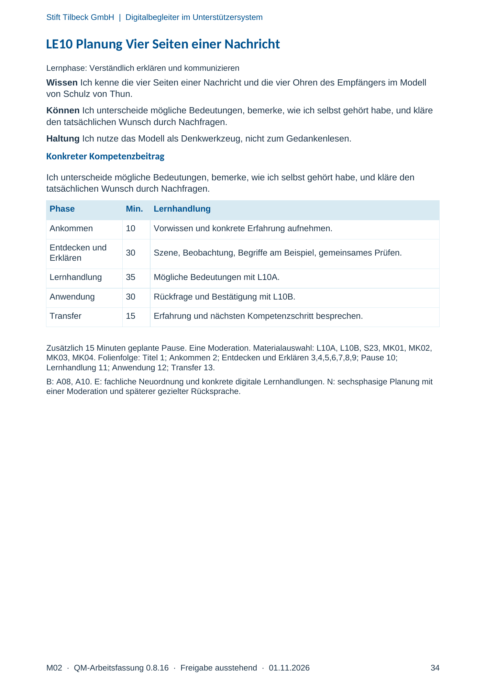
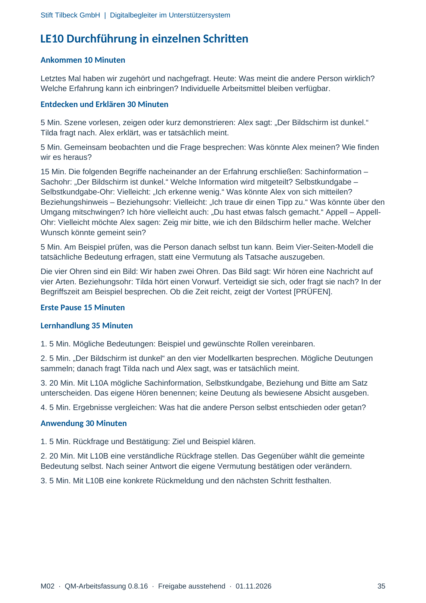
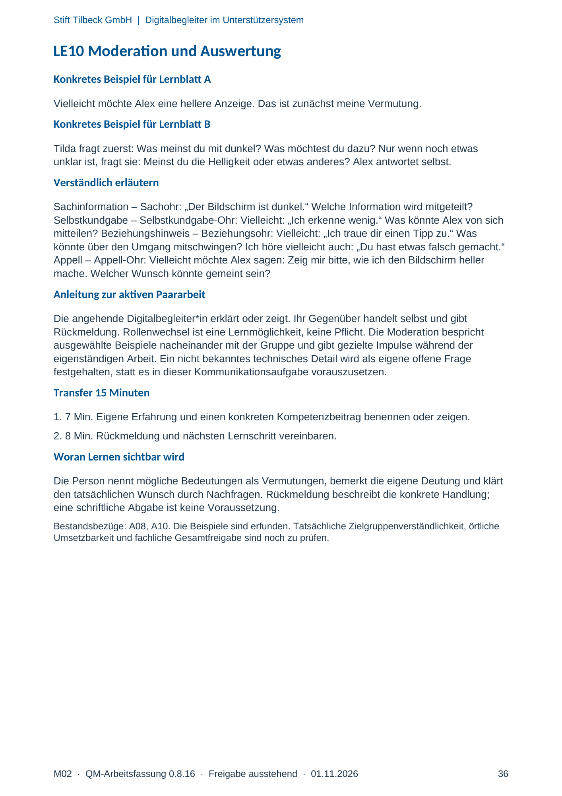

M02 · Originalseite 34, 35, 36
Handbuch und Muster
Gezielte Original-Druckauswahl.
Fragen und Ankreuzfelder werden auf dem Ausdruck bearbeitet. Die Lesefassung speichert keine Antworten.
Lesefassung · Seite 34
Stift Tilbeck GmbH | Digitalbegleiter im Unterstützersystem
LE10 Planung Vier Seiten einer Nachricht
Lernphase: Verständlich erklären und kommunizieren
Wissen Ich kenne die vier Seiten einer Nachricht und die vier Ohren des Empfängers im Modell des Kommunikationsquadrats.
Können Ich unterscheide mögliche Bedeutungen, bemerke, wie ich selbst gehört habe, und kläre
den tatsächlichen Wunsch durch Nachfragen.
Haltung Ich nutze das Modell als Denkwerkzeug, nicht zum Gedankenlesen.
Konkreter Kompetenzbeitrag
Ich unterscheide mögliche Bedeutungen, bemerke, wie ich selbst gehört habe, und kläre den
tatsächlichen Wunsch durch Nachfragen.
Phase Min. Lernhandlung
Ankommen 10 Vorwissen und konkrete Erfahrung aufnehmen.
Entdecken und
Erklären 30 Szene, Beobachtung, Begriffe am Beispiel, gemeinsames Prüfen.
Lernhandlung 35 Mögliche Bedeutungen mit L10A.
Anwendung 30 Rückfrage und Bestätigung mit L10B.
Transfer 15 Erfahrung und nächsten Kompetenzschritt besprechen.
Zusätzlich 15 Minuten geplante Pause. Eine Moderation. Materialauswahl: L10A, L10B, S23, MK01, MK02,
MK03, MK04. Folienfolge: Titel 1; Ankommen 2; Entdecken und Erklären 3,4,5,6,7,8,9; Pause 10;
Lernhandlung 11; Anwendung 12; Transfer 13.
B: A08, A10. E: fachliche Neuordnung und konkrete digitale Lernhandlungen. N: sechsphasige Planung mit
einer Moderation und späterer gezielter Rücksprache.
Originalseite ansehen

Lesefassung · Seite 35
Stift Tilbeck GmbH | Digitalbegleiter im Unterstützersystem
LE10 Durchführung in einzelnen Schritten
Ankommen 10 Minuten
Letztes Mal haben wir zugehört und nachgefragt. Heute: Was meint die andere Person wirklich?
Welche Erfahrung kann ich einbringen? Individuelle Arbeitsmittel bleiben verfügbar.
Entdecken und Erklären 30 Minuten
5 Min. Szene vorlesen, zeigen oder kurz demonstrieren: Alex sagt: „Der Bildschirm ist dunkel.“
Tilda fragt nach. Alex erklärt, was er tatsächlich meint.
5 Min. Gemeinsam beobachten und die Frage besprechen: Was könnte Alex meinen? Wie finden
wir es heraus?
15 Min. Die folgenden Begriffe nacheinander an der Erfahrung erschließen: Sachinformation –
Sachohr: „Der Bildschirm ist dunkel.“ Welche Information wird mitgeteilt? Selbstkundgabe –
Selbstkundgabe-Ohr: Vielleicht: „Ich erkenne wenig.“ Was könnte Alex von sich mitteilen?
Beziehungshinweis – Beziehungsohr: Vielleicht: „Ich traue dir einen Tipp zu.“ Was könnte über den
Umgang mitschwingen? Ich höre vielleicht auch: „Du hast etwas falsch gemacht.“ Appell – Appell-
Ohr: Vielleicht möchte Alex sagen: Zeig mir bitte, wie ich den Bildschirm heller mache. Welcher
Wunsch könnte gemeint sein?
5 Min. Am Beispiel prüfen, was die Person danach selbst tun kann. Beim Vier-Seiten-Modell die
tatsächliche Bedeutung erfragen, statt eine Vermutung als Tatsache auszugeben.
Die vier Ohren sind ein Bild: Wir haben zwei Ohren. Das Bild sagt: Wir hören eine Nachricht auf
vier Arten. Beziehungsohr: Tilda hört einen Vorwurf. Verteidigt sie sich, oder fragt sie nach? In der
Begriffszeit am Beispiel besprechen. Ob die Zeit reicht, zeigt der Vortest [PRÜFEN].
Erste Pause 15 Minuten
Lernhandlung 35 Minuten
1. 5 Min. Mögliche Bedeutungen: Beispiel und gewünschte Rollen vereinbaren.
2. 5 Min. „Der Bildschirm ist dunkel“ an den vier Modellkarten besprechen. Mögliche Deutungen
sammeln; danach fragt Tilda nach und Alex sagt, was er tatsächlich meint.
3. 20 Min. Mit L10A mögliche Sachinformation, Selbstkundgabe, Beziehung und Bitte am Satz
unterscheiden. Das eigene Hören benennen; keine Deutung als bewiesene Absicht ausgeben.
4. 5 Min. Ergebnisse vergleichen: Was hat die andere Person selbst entschieden oder getan?
Anwendung 30 Minuten
1. 5 Min. Rückfrage und Bestätigung: Ziel und Beispiel klären.
2. 20 Min. Mit L10B eine verständliche Rückfrage stellen. Das Gegenüber wählt die gemeinte
Bedeutung selbst. Nach seiner Antwort die eigene Vermutung bestätigen oder verändern.
3. 5 Min. Mit L10B eine konkrete Rückmeldung und den nächsten Schritt festhalten.
Originalseite ansehen

Lesefassung · Seite 36
Stift Tilbeck GmbH | Digitalbegleiter im Unterstützersystem
LE10 Moderation und Auswertung
Konkretes Beispiel für Lernblatt A
Vielleicht möchte Alex eine hellere Anzeige. Das ist zunächst meine Vermutung.
Konkretes Beispiel für Lernblatt B
Tilda fragt zuerst: Was meinst du mit dunkel? Was möchtest du dazu? Nur wenn noch etwas
unklar ist, fragt sie: Meinst du die Helligkeit oder etwas anderes? Alex antwortet selbst.
Verständlich erläutern
Sachinformation – Sachohr: „Der Bildschirm ist dunkel.“ Welche Information wird mitgeteilt?
Selbstkundgabe – Selbstkundgabe-Ohr: Vielleicht: „Ich erkenne wenig.“ Was könnte Alex von sich
mitteilen? Beziehungshinweis – Beziehungsohr: Vielleicht: „Ich traue dir einen Tipp zu.“ Was
könnte über den Umgang mitschwingen? Ich höre vielleicht auch: „Du hast etwas falsch gemacht.“
Appell – Appell-Ohr: Vielleicht möchte Alex sagen: Zeig mir bitte, wie ich den Bildschirm heller
mache. Welcher Wunsch könnte gemeint sein?
Anleitung zur aktiven Paararbeit
Die angehende Digitalbegleiter*in erklärt oder zeigt. Ihr Gegenüber handelt selbst und gibt
Rückmeldung. Rollenwechsel ist eine Lernmöglichkeit, keine Pflicht. Die Moderation bespricht
ausgewählte Beispiele nacheinander mit der Gruppe und gibt gezielte Impulse während der
eigenständigen Arbeit. Ein nicht bekanntes technisches Detail wird als eigene offene Frage
festgehalten, statt es in dieser Kommunikationsaufgabe vorauszusetzen.
Transfer 15 Minuten
1. 7 Min. Eigene Erfahrung und einen konkreten Kompetenzbeitrag benennen oder zeigen.
2. 8 Min. Rückmeldung und nächsten Lernschritt vereinbaren.
Woran Lernen sichtbar wird
Die Person nennt mögliche Bedeutungen als Vermutungen, bemerkt die eigene Deutung und klärt
den tatsächlichen Wunsch durch Nachfragen. Rückmeldung beschreibt die konkrete Handlung;
eine schriftliche Abgabe ist keine Voraussetzung.
Bestandsbezüge: A08, A10. Die Beispiele sind erfunden. Tatsächliche Zielgruppenverständlichkeit, örtliche
Umsetzbarkeit und fachliche Gesamtfreigabe sind noch zu prüfen.
Originalseite ansehen
